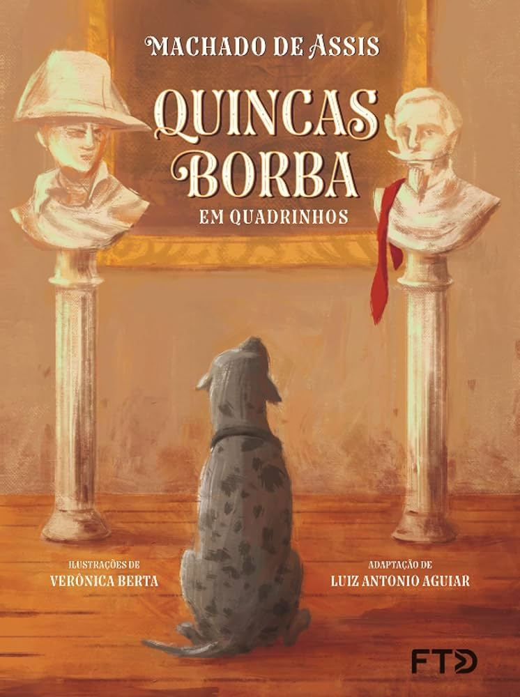
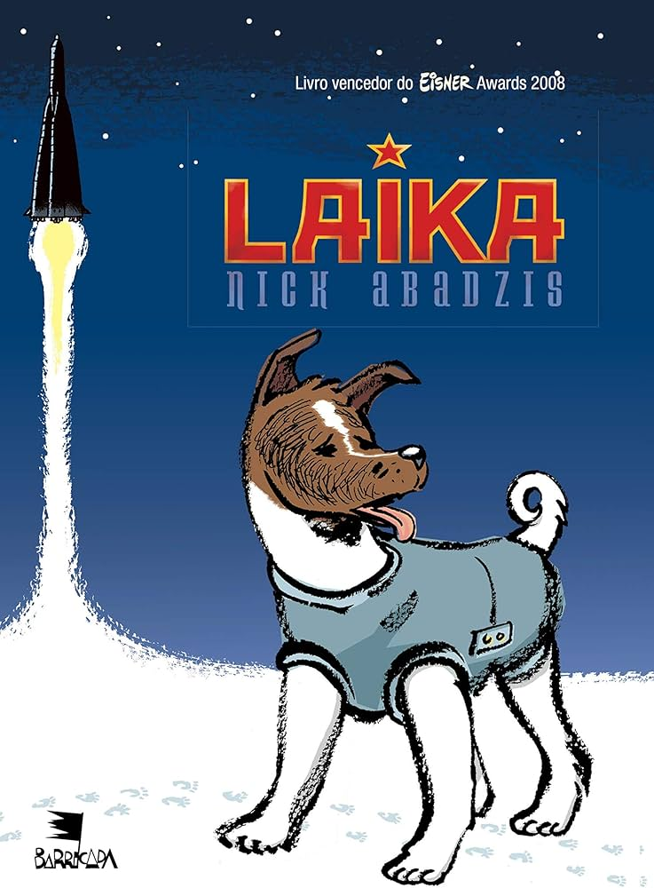
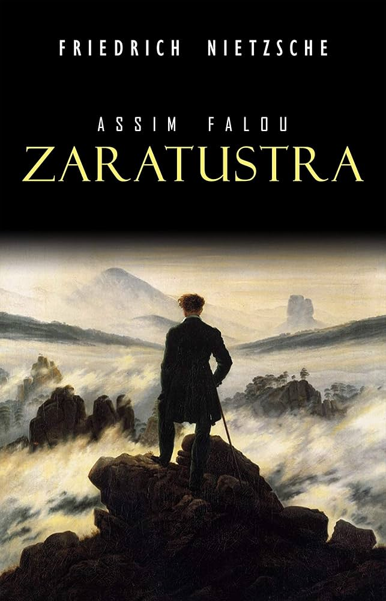
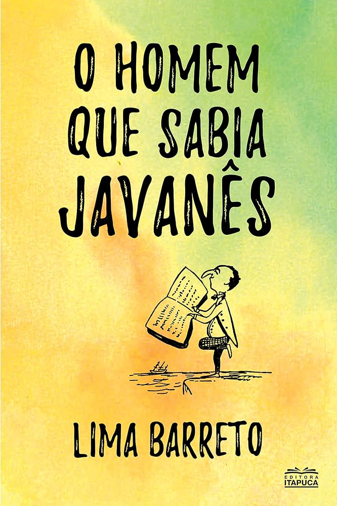
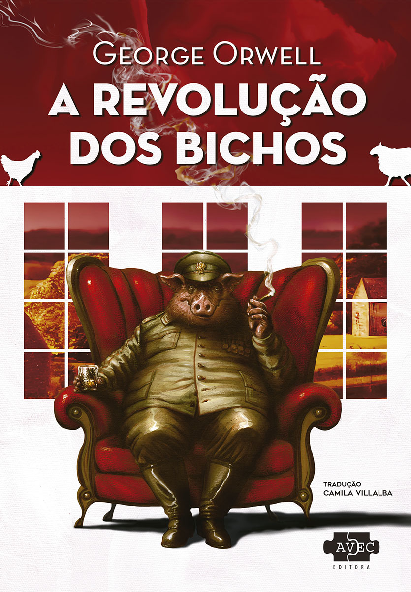

Assassinato no Expresso do Oriente
Autor: Agatha Christie
Sinopse: Durante uma viagem no luxuoso trem Expresso do Oriente, um homem é assassinado. O famoso detetive Hercule Poirot investiga o caso, revelando que todos os passageiros podem estar envolvidos em um crime cheio de mistérios e segredos.
Preço: R$ 34,90

1984
Autor: George Orwell
Sinopse: Em uma sociedade dominada por um governo totalitário, Winston Smith luta contra a vigilância constante do “Grande Irmão”, buscando liberdade em um mundo onde até os pensamentos são controlados.
Preço: R$ 24,90

Quincas Borba
Autor: Machado de Assis
Sinopse: Rubião herda a fortuna de seu amigo Quincas Borba, junto com a missão de cuidar de seu cachorro. Ao longo da história, ele mergulha em loucura e ilusões, em uma crítica irônica à sociedade.
Preço: R$ 27,90

Maus
Autor: Art Spiegelman
Sinopse: Uma história em quadrinhos que retrata o Holocausto através das memórias do pai do autor, mostrando judeus como ratos e nazistas como gatos, em um relato profundo sobre sobrevivência e trauma.
Preço: R$ 39,90
A visão das plantas
Autor: Djaimilia Pereira de Almeida
Sinopse: A obra acompanha a trajetória de Celestino, um homem marcado por seu passado, explorando memória, culpa e humanidade em uma narrativa sensível e reflexiva.
Preço: R$ 32,90
Amoras
Autor: Emicida
Sinopse: Um livro infantil que valoriza a autoestima e a representatividade negra, mostrando a importância de reconhecer a beleza e a identidade desde a infância.
Preço: R$ 21,90
O Livro da Política
Autor: Vários autores
Sinopse: Um guia ilustrado que apresenta as principais ideias políticas da história, explicando conceitos e pensadores de forma acessível e didática.
Preço: R$ 44,90
Quarto de Despejo
Autor: Carolina Maria de Jesus
Sinopse: Diário real de uma mulher que vive na favela, relatando com crueza e sensibilidade o cotidiano da pobreza, fome e exclusão social no Brasil.
Preço: R$ 29,90

Laika
Autor: Nick Abadzis
Sinopse: A emocionante história da cadela Laika, enviada ao espaço pela União Soviética, mostrando os bastidores da corrida espacial e o impacto humano dessa missão.
Preço: R$ 36,90

Assim Falou Zaratustra
Autor: Friedrich Nietzsche
Sinopse: Uma obra filosófica que acompanha o personagem Zaratustra, abordando temas como o super-homem, moralidade e o sentido da existência humana.
Preço: R$ 26,90

O Homem que Sabia Javanês
Autor: Lima Barreto
Sinopse: Um conto satírico sobre um homem que finge saber javanês para conseguir prestígio e vantagens, criticando a superficialidade da sociedade.
Preço: R$ 19,90

A Revolução dos Bichos
Autor: George Orwell
Sinopse: Uma fábula política em que animais se rebelam contra seus donos humanos, criando uma sociedade que acaba se tornando tão opressora quanto a anterior.
Preço: R$ 23,90